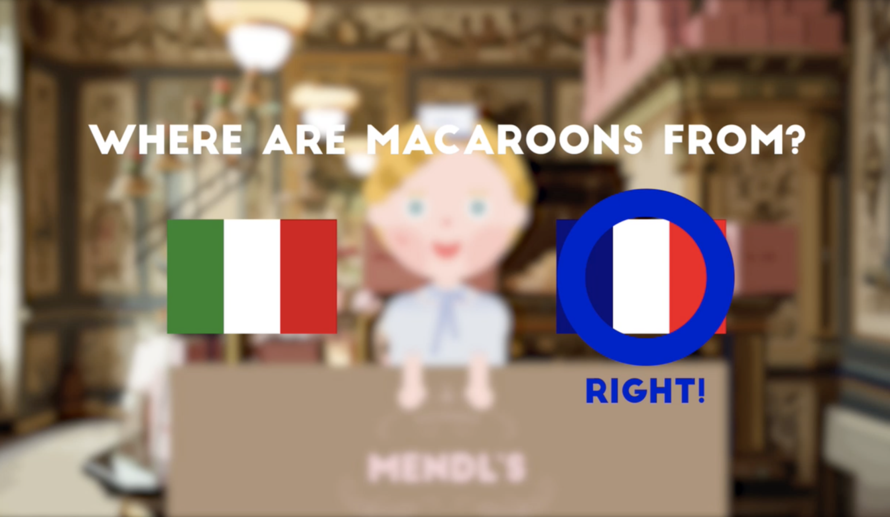

<!DOCTYPE html>
<html>
    <head>
        <meta charset="utf-8" />
        <meta name="viewport" content="width=device-width, initial-scale=1">
        <title>Interactive Video</title>
        <link rel="stylesheet" type="text/css" href="../css/styles.css">
        <link rel="preconnect" href="https://fonts.googleapis.com">
        <link rel="preconnect" href="https://fonts.googleapis.com">
        <link rel="preconnect" href="https://fonts.gstatic.com" crossorigin>
        <link href="https://fonts.googleapis.com/css2?family=Courier+Prime:ital,wght@0,400;0,700;1,400;1,700&family=Montserrat:ital,wght@0,100..900;1,100..900&display=swap" rel="stylesheet">
        <link rel="icon" type="image/png" href="../dy_favicon.png">
    </head>
</html>
<body>
    <div class="mode-toggle">
        <button id="darkModeToggle">
            
        </button>
    </div>
    <header>
        <div class="language-selector">
            <a href="../sub_video_kr.html">KR</a>
            <div class="lang-divider"></div>
            <a href="#" class="active">EN</a>
            <div class="lang-divider"></div>
            <a href="../cn/sub_video_cn.html">CN</a>
        </div>
    </header>
    <div class="sub-contents">
        <a href="index_en.html">&lt; Back to Home</a>
        
        <div class="sub-contents-text">
            <div class="sub-text-title">Overview</div>
            <div class="sub-text-p">
                Interaction Video differs from traditional videos by offering viewers the opportunity to make choices, which then alter the flow of the video based on the selected options. This format provides an experience beyond mere viewing, allowing viewers to actively participate and guide the narrative. Viewers navigate through different nodes based on their choices, making the video content more engaging and interactive.
                <br/><br/>
                In this project, I contributed 50% to the planning and design aspects. I used Photoshop to create graphic designs and After Effects to add motion effects, enhancing the visual quality of the video. Additionally, I uploaded the videos corresponding to each node to the eko website, providing users with various paths to explore.
                <br/><br/>
                The project was themed around ‘cooking’, and the design process drew inspiration from the film <i>The Grand Budapest Hotel</i>, implementing a unique and captivating visual style. This inspiration was reflected in the video’s color palette, graphic elements, and overall mise-en-scène, aiming to create an immersive experience similar to that of a film.
                <br/><br/>
                Throughout the project, the focus was on allowing viewers to play an active role as creators of the story, rather than just passive observers. The approach effectively conveyed the new form of media experience that interaction videos offer.
            </div>
        </div>
                
                
        
        
        
        <div class="sub-contents-text">
            <div class="sub-text-title">Link</div>
            <div class="sub-text-p">
                    <a href="https://video.eko.com/v/zrBK3z">https://video.eko.com/v/zrBK3z</a>
            </div>
        </div>

    <footer>
        <p>&copy; 2025 Dayeong Kim. All rights reserved.</p>
    </footer>

    <script src="../js/scripts.js"></script>
</body>